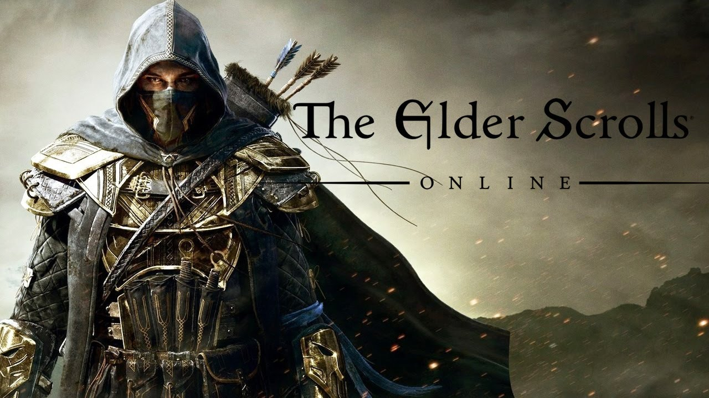

The elder scroll este o serie lansata in anul 1994 ce avea sa revolutioneze intregul gen RPG. Chiar daca la inceput, prima editie nu era la fel de populara precum cea curenta (skyrim), putem sa spunem ca pentru industria jocurilor video, The Elder Scrolls a marcat un punct de evolutie atat pentru companiile vremii dar si standardele ce urmau sa apara. In total, din 1994 pana in 2016, seria a vandut peste 40 de milioane de copii in intreaga lume. TES poate fi aliniat extrem de usor sub categoria RPG. El pune accentul pe frumusetile gamingului: suport pentru comunitatea de modding, grafici luitoare, o poveste captivanta, coloana sonora complexa, si un mecanism de lupta foarte bine gandit si extrem de placut.
Before The Elder Scrolls Prior to working on The Elder Scrolls series, Bethesda had worked predominantly with sports and action games. In the six years from its founding to Arena's 1994 release, Bethesda had released ten games, six of them sports games, with such titles as Hockey League Simulator, NCAA Basketball: Road to the Final Four ('91/'92 Edition), and Wayne Gretzky Hockey, and the remaining four adaptations from other media, primarily the Terminator series. Bethesda's course changed abruptly when it began its first action role-playing venture. Designer Ted Peterson recalls: "I remember talking to the guys at Sir-Tech who were doing Wizardry VII: Crusaders of the Dark Savant at the time, and them literally laughing at us for thinking we could do it." Ted Peterson worked alongside Vijay Lakshman as one of the initial designers of what was then simply Arena, a "medieval-style gladiator game."
|  | |||
The Elder Scrolls games can be safely categorized as role-playing games (RPG), although they do include elements taken from action and adventure games. In Arena, as in many RPGs, players advance by killing monsters (and thereby gaining experience points) until a preset value is met, whereupon they level-up. However, in Daggerfall, Morrowind, and Oblivion the series took a skill-based approach to character advancement. Players develop their characters' skills by applying them, and only level-up when a certain set of skills have been developed. Skyrim took a new approach, where the more a skill is leveled, the more it helps to level the character. This shifted the focus away from character creation and more onto character development. The flexibility of the games' engines has facilitated the release of game extensions (or mods) through The Elder Scrolls Construction Set.
The Elder Scrolls main series of games emphasizes different aspects of the gaming experience than most computer role-playing games. A brief article by Joystiq in early November 2006 compared BioWare's creations to Bethesda's by noting a difference in emphasis. Bethesda's creations focused on "aesthetic presentation and open-ended adventuring"; BioWare's on a combat system and modular architecture. This overarching aim has been noted by their designers as well. Bethesda has described their motivations in creating the first series game, Arena, as those of any good pen-and-paper RPG: creating an environment in which the player could be what the player wants and do what the player wants. Daggerfall 's manual begins with a sort of design manifesto, declaring the developers' intention to "create a book with blank pages," and "a game designed to encourage exploration and reward curiosity." Choices, in the form of paths taken by the player, to do good, to chase after evil, are left open to the player, "just like in real life." This design trend continued with Morrowind, following the hiatus of similarly epic games in the interim, though Joystiq's previously noted insistence on graphics came again to the fore. During the development of Morrowind, Bethesda tripled its staff, so as to perfectly color its newly hand-made world. In their own words, "We knew we had to exceed the visual polish of the other games on the market, and we made it our goal to put The Elder Scrolls back into the forefront of game innovation."
The Elder Scrolls world can be described as one of high fantasy with influences from a multitude of cultures all over the globe (Medieval, Roman, Nordic, Ancient Japanese, etc.). Like most works of high or epic fantasy, the Elder Scrolls games are typically serious in tone and epic in scope, dealing with themes of grand struggle against a supernatural or evil force. Many races exist in the world of The Elder Scrolls, some typical of high fantasy works (humans and elves), some atypical (the bestial Argonian and Khajiit races), and some subversions (the Dwemer, known colloquially as "dwarves," follow the high fantasy stereotype of being subterranean-dwelling, skilled metallurgists and masons, but are in fact a variety of elf), magic and sorcery, mythical creatures, factions with their own political agendas, walled medieval cities and strongholds, and plot elements driven by prophecies and legends. In accordance with many literary high fantasy works, the world of The Elder Scrolls is known for its attention to detail including well developed lore and back story. This includes a vast amount of information such as names, dates, and places that constitute its history and the interconnected structure of its various societies, cultures, and religions. Lore including histories and legends are contained in thousands of readable in-game books that are scattered throughout the game world..